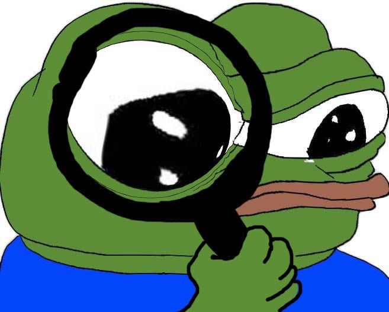
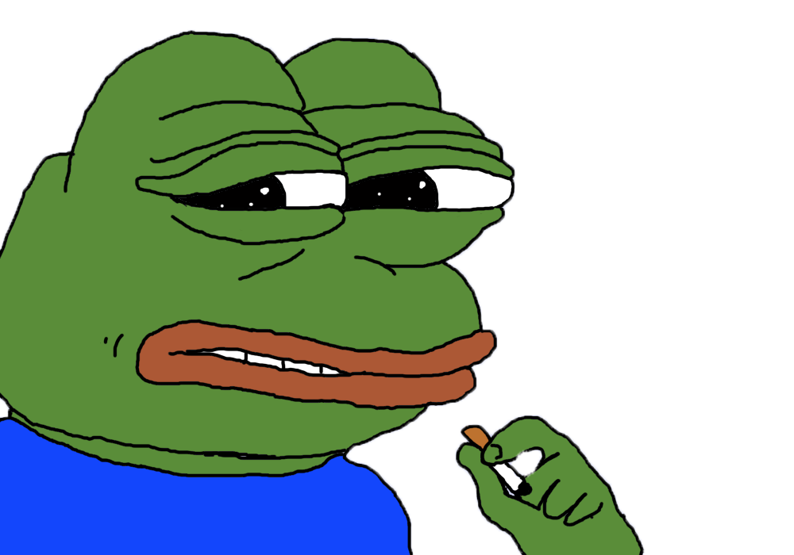

Alexander Shepeliev Blog
POPULAR
Bargain
Anger

Depression

Adoption
Stage 5: Adoption, 21 august 2018
Although this is the final stage, managers need to understand that acceptance does not necessarily mean acceptance. People understand that further resistance is meaningless, and they begin to assess prospects...
Depression
Stage 4: Depression, 22 august 2018
If the previous stage has a negative outcome, people will be in a state of depression, depression, uncertainty about the future and lack of energy...
Bargain
Stage 3: Bargain, 23 august 2018
This is an attempt to postpone the inevitable. We are trying to "make a deal" with the leadership or with ourselves in order to postpone the changes or find a way out of the situation...
Anger
Stage 2: Anger, 24 august 2018
It is at this stage that it is important to understand that people's anger is not caused by changes in themselves, but by the losses that they bring with them...
Negation
Stage 1: Negation, 25 august 2018
At the initial stage of negation, people tend to fear that changes will be negative for them personally ...